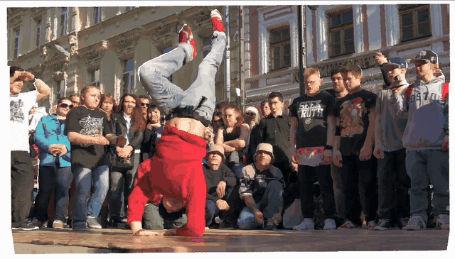
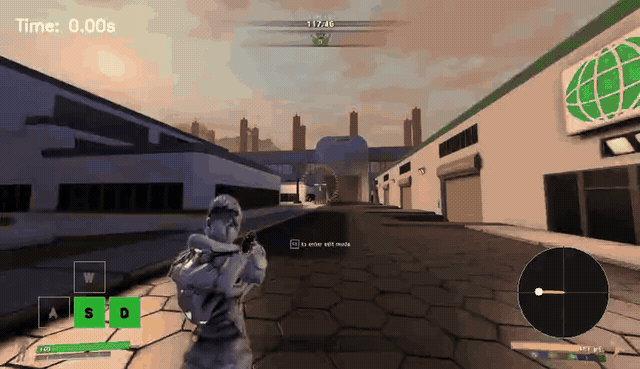
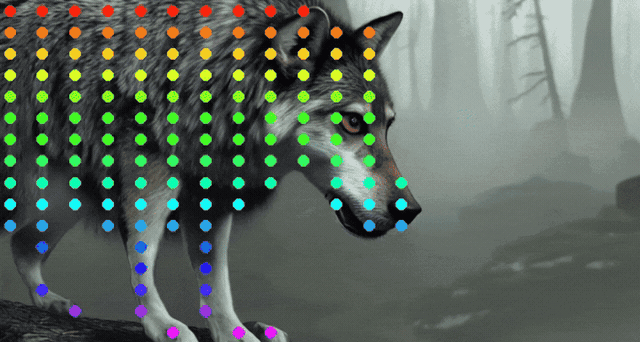
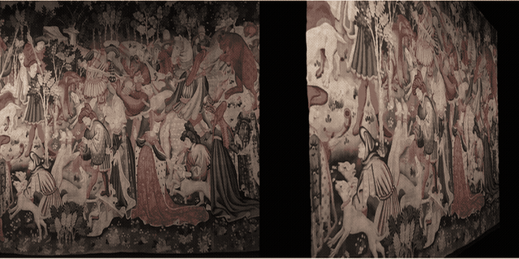

Work Experience
 Research Intern at Meta Reality Lab, Burlingame, CA (2026.06 - 2026.11, Expected)
Research Intern at Meta Reality Lab, Burlingame, CA (2026.06 - 2026.11, Expected) Mentors: Zhicheng Yan, Xiaoyu Xiang
 Research Intern at Adobe Research, San Jose, CA (2025.05 - 2025.09)
Research Intern at Adobe Research, San Jose, CA (2025.05 - 2025.09) Mentors: Yang Zhou, Yicong Hong, Chun-Hao Huang, Feng Liu
Project: Foundation Model for Infinite Interactive 3D Gaming Worlds
Research Intern at Adobe Research, San Jose, CA (2024.05 - 2024.08) Mentors: Yang Zhou, Jing Shi, Difan Liu, Zhan Xu, Feng Liu
Project: Foundation Model for Consistent Full-Body Human Generation
 Research Intern at Naver Cloud, Seoul, Korea (2023.04 - 2023.10)
Research Intern at Naver Cloud, Seoul, Korea (2023.04 - 2023.10) Mentors: Seunggyu Chang, Heesu Kim, DongJae Lee
Project: Training-free Semantically Consistent Image Generation
Selected Publications

TrackCraft3R: Repurposing Video Diffusion Transformers for Dense 3D Tracking
Jisu Nam, Jahyeok Koo, Soowon Son, Jaewoo Jung, Honggyu An, Junhwa Hur†, Seungryong Kim†
arXiv 2026

WorldCam: Interactive Autoregressive 3D Gaming Worlds with Camera Pose as a Unifying Geometric Representation
Jisu Nam, Yicong Hong, Chun-Hao Paul Huang, Feng Liu, JoungBin Lee, Jiyoung Kim, Siyoon Jin, Yunsung Lee, Jaeyoon Jung, Suhwan Choi, Seungryong Kim†, Yang Zhou†
Adobe Tech Report, CVPRW (VideoWorldModel) 2026

Emergent Temporal Correspondences from Video Diffusion Transformers
Jisu Nam*, Soowon Son*, Dahyun Chung, Jiyoung Kim, Siyoon Jin, Junhwa Hur†, Seungryong Kim†
NeurIPS 2025

Visual Persona: Foundation Model for Full-Body Human Customization
Jisu Nam, Soowon Son, Zhan Xu, Jing Shi, Difan Liu, Feng Liu, Aashish Misraa, Seungryong Kim†, Yang Zhou†
CVPR 2025

Local All-Pair Correspondence for Point Tracking
Seokju Cho, Jiahui Huang, Jisu Nam, Honggyu An, Seungryong Kim†, Joon-Young Lee†
ECCV 2024

DreamMatcher: Appearance Matching Self-Attention for Semantically-Consistent Text-to-Image Personalization
Jisu Nam, Heesu Kim, DongJae Lee, Siyoon Jin, Seungryong Kim†, Seunggyu Chang†
CVPR 2024

Diffusion Model for Dense Matching
Jisu Nam, Gyuseong Lee, Sunwoo Kim, Hyeonsu Kim, Hyoungwon Cho, Seyeon Kim, Seungryong Kim
ICLR 2024, Oral (1.2% acceptance rate)

Neural Matching Fields: Implicit Representation of Matching Fields for Visual Correspondence
Sunghwan Hong, Jisu Nam, Seokju Cho, Susung Hong, Sangryul Jeon, Dongbo Min, and Seungryong Kim
NeurIPS 2022

Cost Aggregation with 4D Convolutional Swin Transformer for Few-Shot Segmentation
Sunghwan Hong*, Seokju Cho*, Jisu Nam, Stephen Lin, Seungryong Kim
ECCV 2022
Honors
37th Workshop on Image Processing and Image Understanding, 2025
Best Paper Award
37th Workshop on Image Processing and Image Understanding, 2025
Best Poster Presentation Award
Qualcomm Innovation Fellowship, 2024
Winner
33th Artificial Intelligence and Signal Processing, 2023
Best Paper Award